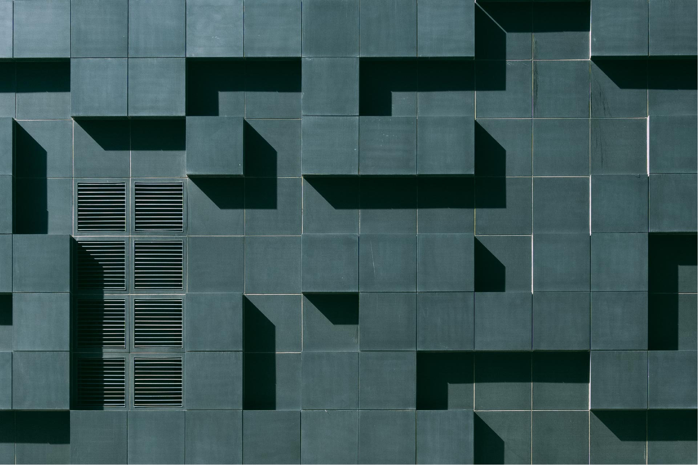
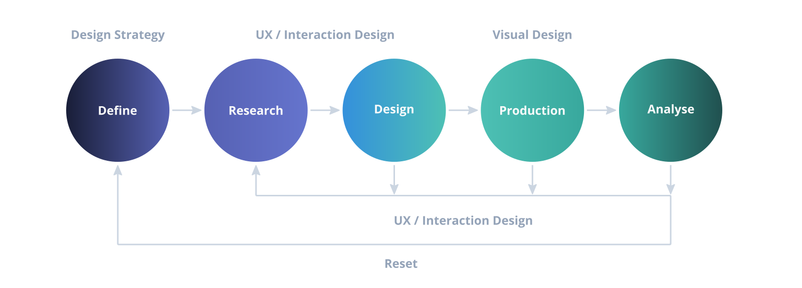
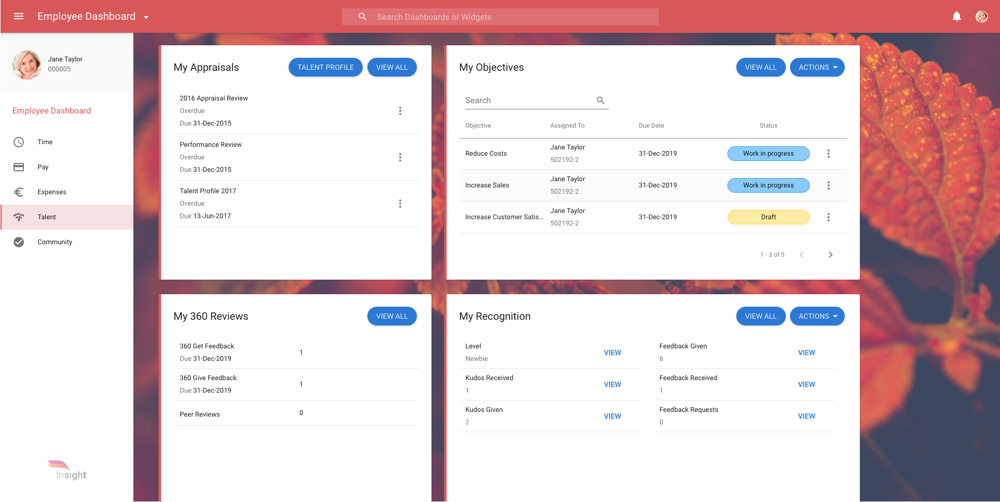
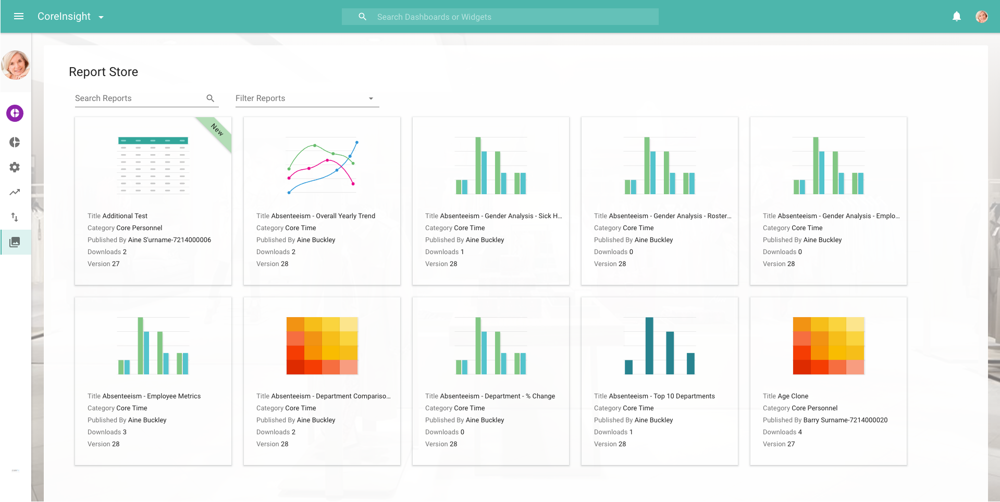
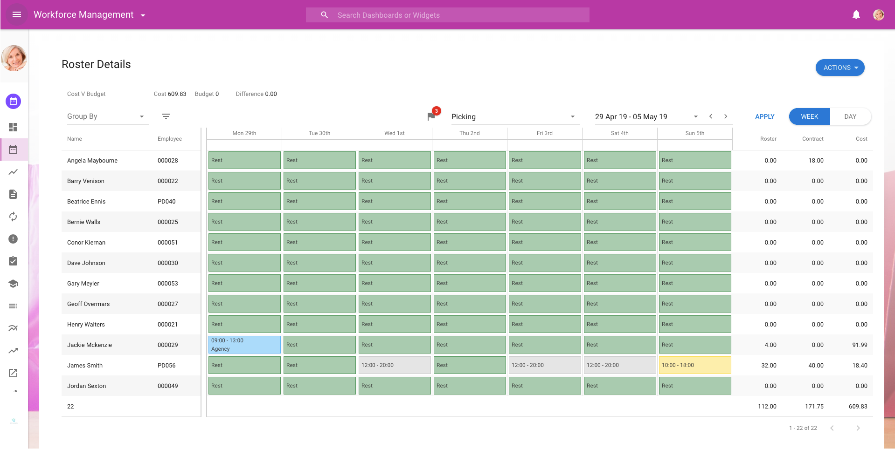

Enterprise Design
Product & UI Redesign of the Access PeopleXD end-to-end HR solution with the aim of streamlining the front-end user experience.

Background
Access PeopleXD (formerly CoreHR) is an end-to-end HR solution with unified payroll for UK and Irish businesses.
The application was entirely redesigned in almost every way, from UI & UX to architecture, with the aim of streamlining the experience.
The visual redesign was based on Google’s Material Design language, as the application was previously not based on a formal design system.
Access PeopleXD is a massive production application; converting it was a significant undertaking that spanned several years.
My Role
- UI Designer & Prototyper - Acted as a visual UI designer to adapt Material Design to the specific needs of the application.
- UX Designer - Conducted research, interviewed stakeholders, performed user testing, and carried out field research.
- Design Evangelist - Worked to integrate product design into the software development lifecycle and acted as a standards gatekeeper.
- Accessibility Engineer - Performed accessibility audits and continuous assessment of the production application.
Key Achievements
- Implemented a design process - Helped teams establish structure with designers embedded into sprint teams.
- Improved usability & accessibility across the application - Established automated accessibility testing and communicated the value of inclusive design across the organization.
- Design Evangelism - Brought the language of design to the forefront of product discussions. Developed a design language that reduced pressure on support teams and improved sales presentations.
- Design Systems - Created, maintained, and implemented a design system using atomic design principles to bring consistency and speed to development.
Design Process
After iterating on various design processes, we concluded that there is no one-size-fits-all solution. We settled on a simplified version of the process shown below.
The product suite is extensive, and we had to "change the wheels while the car was moving," coordinating across a large number of development and product teams.
Understanding Problems
Through detailed user research and direct engagement, we gained key insights that helped define core problem sets.
Recorded interviews using tools like Dovetail helped us analyze feedback in the moment and categorize pain points into actionable themes.
Sample Design Process

Research Techniques
- Recorded Analysis - There is no substitute for listening back to interviews to interpret implied needs and nuanced feedback.
- Jobs To Be Done - A core principle used to define the key accomplishments a user needs to achieve within a task.
- User and Company Personas - Created comprehensive personas to keep the end-user's context at the center of development.
- Iteration - Continuous feedback loops with customers helped improve pNPS scores and overall satisfaction.
- Accessibility - Implemented detailed accessibility standards that are now integral to the product's DNA.
Conclusions
This was a massive, multi-year project currently in its second iteration and live with millions of users.
We gather in-app feedback on a rolling basis. While the majority is positive, we lean on negative feedback to identify new research targets and problem sets.
Some Concept Examples
Dashboards

Analytics

Workforce Management
